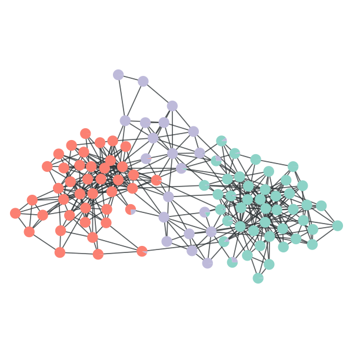

graph_tool.community - Community structure¶
This module contains algorithms for the computation of community structure on graphs.
Stochastic blockmodel inference¶
Non-hierarchical models¶
Summary¶
minimize_blockmodel_dl |
Find the block partition of an unspecified size which minimizes the description length of the network, according to the stochastic blockmodel ensemble which best describes it. |
BlockState |
This class encapsulates the block state of a given graph. |
OverlapBlockState |
This class encapsulates the overlapping block state of a given graph. |
CovariateBlockState |
This class encapsulates the (possibly overlapping) block state of a given graph, where the edges are divided into discrete layers. |
mcmc_sweep |
Performs a Markov chain Monte Carlo sweep on the network, to sample the block partition according to a probability \(\propto e^{-\beta \mathcal{S}_{t/c}}\), where \(\mathcal{S}_{t/c}\) is the blockmodel entropy. |
MinimizeState |
This object stores information regarding the current entropy minimization state, so that the algorithms can resume previously started runs. |
multilevel_minimize |
Performs an agglomerative heuristic, which progressively merges blocks together (while allowing individual node moves) to achieve a good partition in B blocks. |
collect_vertex_marginals |
Collect the vertex marginal histogram, which counts the number of times a node was assigned to a given block. |
collect_edge_marginals |
Collect the edge marginal histogram, which counts the number of times the endpoints of each node have been assigned to a given block pair. |
mf_entropy |
Compute the “mean field” entropy given the vertex block membership marginals. |
bethe_entropy |
Compute the Bethe entropy given the edge block membership marginals. |
model_entropy |
Computes the amount of information necessary for the parameters of the traditional blockmodel ensemble, for B blocks, N vertices, E edges, and either a directed or undirected graph. |
get_max_B |
Return the maximum detectable number of blocks, obtained by minimizing: |
get_akc |
Return the minimum value of the average degree of the network, so that some block structure with \(B\) blocks can be detected, according to the minimum description length criterion. |
condensation_graph |
Obtain the condensation graph, where each vertex with the same ‘prop’ value is condensed in one vertex. |
get_block_edge_gradient |
Get edge gradients corresponding to the block membership at the endpoints of the edges given by the be edge property map. |
Hierarchical models¶
Summary¶
minimize_nested_blockmodel_dl |
Find the block hierarchy of an unspecified size which minimizes the description length of the network, according to the nested stochastic blockmodel ensemble which best describes it. |
NestedBlockState |
This class encapsulates the nested block state of a given graph. |
NestedMinimizeState |
This object stores information regarding the current entropy minimization state, so that the algorithms can resume previously started runs. |
init_nested_state |
Initializes a nested block hierarchy with sizes given by Bs. |
nested_mcmc_sweep |
Performs a Markov chain Monte Carlo sweep on all levels of the hierarchy. |
nested_tree_sweep |
Performs one greedy sweep in the entire hierarchy tree, attempting to decrease its description length. |
get_hierarchy_tree |
Obtain the nested hierarchical levels as a tree. |
Modularity-based community detection¶
Summary¶
community_structure |
Obtain the community structure for the given graph, using a Potts model approach, which is a generalization of modularity maximization). |
modularity |
Calculate Newman’s modularity. |
Contents¶
-
graph_tool.community.minimize_blockmodel_dl(g, deg_corr=True, overlap=False, ec=None, layers=False, confine_layers=False, nonoverlap_init=False, dl=True, multigraph=True, dense=False, sparse_heuristic=False, eweight=None, vweight=None, clabel=None, c=0, nsweeps=10, adaptive_sweeps=True, epsilon=0.001, anneal=(1.0, 1.0), greedy_cooling=True, sequential=True, parallel=False, r=2, nmerge_sweeps=10, max_B=None, min_B=None, mid_B=None, checkpoint=None, minimize_state=None, exhaustive=False, init_states=None, max_BE=None, verbose=False, **kwargs)[source]¶ Find the block partition of an unspecified size which minimizes the description length of the network, according to the stochastic blockmodel ensemble which best describes it.
Parameters: g :
GraphGraph to be modelled.
deg_corr :
bool(optional, default:True)If
True, the degree-corrected version of the blockmodel ensemble will be assumed, otherwise the traditional variant will be used.overlap :
bool(optional, default:False)If
True, the mixed-membership version of the blockmodel will be used.ec :
PropertyMap(optional, default:None)If provided, this should be an edge
PropertyMapcontaining edge covariates that will split the network in discrete layers.layers :
bool(optional, default:False)If
True, and ´ec` is notNone, the “independent layers” version of the model is used, instead of the “edge covariates” version.confine_layers :
bool(optional, default:False)If
True, and ´ec` is notNoneandoverlap == True, the half edges will only be moved in such a way that inside each layer the group membership remains non-overlapping.nonoverlap_init :
bool(optional, default:False)If
True, and ´overlap==True`, the minimization starts by first fitting the non-overlapping model, and using that as a starting state.dl :
bool(optional, default:True)If
True, the change in the whole description length will be considered after each vertex move, not only the entropy.multigraph :
bool(optional, default:False)If
True, the multigraph entropy will be used.dense :
bool(optional, default:False)If
True, the “dense” variant of the entropy will be computed.sparse_heuristic :
bool(optional, default:False)If
True, the sparse entropy will be used to find the best partition, but the dense entropy will be used to compare different partitions. This has an effect only ifdense == True.eweight :
PropertyMap(optional, default:None)Edge multiplicities (for multigraphs or block graphs).
vweight :
PropertyMap(optional, default:None)Vertex multiplicities (for block graphs).
clabel :
PropertyMap(optional, default:None)Constraint labels on the vertices. If supplied, vertices with different label values will not be clustered in the same group.
c :
float(optional, default:1.0)This parameter specifies how often fully random moves are attempted, instead of more likely moves based on the inferred block partition. For
c == 0, no fully random moves are attempted, and forc == infthey are always attempted.nsweeps :
int(optional, default:10)The number of sweeps done after each merge step to reach the local minimum.
adaptive_sweeps :
bool(optional, default:True)If
True, the number of sweeps necessary for the local minimum will be estimated to be enough so that no more thanepsilon * Nnodes changes their states in the lastnsweepssweeps.epsilon :
float(optional, default:1e-3)Converge criterion for
adaptive_sweeps.anneal : pair of
floats(optional, default:(1., 1.))The first value specifies the starting value for
betaof the MCMC steps, and the second value is the factor which is multiplied tobetaafter each estimated equilibration (according tonsweepsandadaptive_sweeps).greedy_cooling :
bool(optional, default:True)If
True, the value ofbetaof the MCMC steps are kept at infinity for all steps. Otherwise they change according to theannealparameter.sequential :
bool(optional, default:True)If
True, the move attempts on the vertices are done in sequential random order. Otherwise a total of N moves attempts are made, where N is the number of vertices, where each vertex can be selected with equal probability.parallel :
bool(optional, default:False)If
True, the updates are performed in parallel (multiple threads).r :
float(optional, default:2.)Agglomeration ratio for the merging steps. Each merge step will attempt to find the best partition into \(B_{i-1} / r\) blocks, where \(B_{i-1}\) is the number of blocks in the last step.
nmerge_sweeps : int (optional, default: 10)
The number of merge sweeps done, where in each sweep a better merge candidate is searched for every block.
max_B :
int(optional, default:None)Maximum number of blocks tried. If not supplied, it will be automatically determined.
min_B :
int(optional, default: 1)Minimum number of blocks tried.
mid_B :
int(optional, default:None)Middle of the range which brackets the minimum. If not supplied, will be automatically determined.
checkpoint : function (optional, default:
None)If provided, this function will be called after each call to
mcmc_sweep(). This can be used to store the current state, so it can be continued later. The function must have the following signature:def checkpoint(state, L, delta, nmoves, minimize_state): ...
where state is either a
BlockStateinstance orNone, L is the current description length, delta is the entropy difference in the last MCMC sweep, and nmoves is the number of accepted block membership moves. Theminimize_stateargument is aMinimizeStateinstance which specifies the current state of the algorithm, which can be stored viapickle, and supplied via theminimize_stateoption below to continue from an interrupted run.This function will also be called when the MCMC has finished for the current value of \(B\), in which case
state == None, and the remaining parameters will be zero, except the last.minimize_state :
MinimizeState(optional, default:None)If provided, this will specify an exact point of execution from which the algorithm will continue. The expected object is a
MinimizeStateinstance which will be passed to the callback of thecheckpointoption above, and can be stored bypickle.exhaustive :
bool(optional, default:False)If
True, the best value ofBwill be found by testing all possible values, instead of performing a bisection search.init_states :
listofBlockStateorOverlapBlockState(optional, default:None)If provided, this list of block states will be used when performing the minimization.
max_BE :
int(optional, default:1000)If the number of blocks exceeds this number, a sparse representation of the block graph is used, which is slightly less efficient, but uses less memory,
verbose :
bool(optional, default:False)If
True, verbose information is displayed.Returns: state :
BlockStateorOverlapBlockStateThe block state containing the best model fit.
Notes
This algorithm attempts to find a block partition of an unspecified size which minimizes the description length of the network,
\[\Sigma_{t/c} = \mathcal{S}_{t/c} + \mathcal{L}_{t/c},\]where \(\mathcal{S}_{t/c}\) is the blockmodel entropy (as described in the docstring of
mcmc_sweep(),BlockState.entropy()OverlapBlockState.entropy()) and \(\mathcal{L}_{t/c}\) is the information necessary to describe the model (as described in the docstring ofmodel_entropy(),BlockState.entropy()andOverlapBlockState.entropy()).The algorithm works by minimizing the entropy \(\mathcal{S}_{t/c}\) for specific values of \(B\) via
mcmc_sweep()(with \(\beta = 1\) and \(\beta\to\infty\)), and minimizing \(\Sigma_{t/c}\) via an one-dimensional Fibonacci search on \(B\). See [peixoto-parsimonious-2013] and [peixoto-efficient-2014] for more details.This algorithm has a complexity of \(O(\tau N\ln^2 B_{\text{max}})\), where \(N\) is the number of nodes in the network, \(\tau\) is the mixing time of the MCMC, and \(B_{\text{max}}\) is the maximum number of blocks considered. If \(B_{\text{max}}\) is not supplied, it is computed as \(\sim\sqrt{E}\) via
get_max_B(), in which case the complexity becomes \(O(\tau E\ln E)\).References
[holland-stochastic-1983] Paul W. Holland, Kathryn Blackmond Laskey, Samuel Leinhardt, “Stochastic blockmodels: First steps”, Carnegie-Mellon University, Pittsburgh, PA 15213, U.S.A., DOI: 10.1016/0378-8733(83)90021-7 [faust-blockmodels-1992] Katherine Faust, and Stanley Wasserman. “Blockmodels: Interpretation and Evaluation.” Social Networks 14, no. 1-2 (1992): 5-61. DOI: 10.1016/0378-8733(92)90013-W [karrer-stochastic-2011] Brian Karrer, and M. E. J. Newman. “Stochastic Blockmodels and Community Structure in Networks.” Physical Review E 83, no. 1 (2011): 016107. DOI: 10.1103/PhysRevE.83.016107. [peixoto-entropy-2012] Tiago P. Peixoto “Entropy of Stochastic Blockmodel Ensembles.” Physical Review E 85, no. 5 (2012): 056122. DOI: 10.1103/PhysRevE.85.056122, arXiv: 1112.6028. [peixoto-parsimonious-2013] Tiago P. Peixoto, “Parsimonious module inference in large networks”, Phys. Rev. Lett. 110, 148701 (2013), DOI: 10.1103/PhysRevLett.110.148701, arXiv: 1212.4794. [peixoto-efficient-2014] Tiago P. Peixoto, “Efficient Monte Carlo and greedy heuristic for the inference of stochastic block models”, Phys. Rev. E 89, 012804 (2014), DOI: 10.1103/PhysRevE.89.012804, arXiv: 1310.4378. [peixoto-model-2015] Tiago P. Peixoto, “Model selection and hypothesis testing for large-scale network models with overlapping groups”, Phys. Rev. X 5, 011033 (2015), DOI: 10.1103/PhysRevX.5.011033, arXiv: 1409.3059. [peixoto-inferring-2015] Tiago P. Peixoto, “Inferring the mesoscale structure of layered, edge-valued and time-varying networks”, arXiv: 1504.02381 Examples
>>> g = gt.collection.data["polbooks"] >>> state = gt.minimize_blockmodel_dl(g) >>> b = state.b >>> gt.graph_draw(g, pos=g.vp["pos"], vertex_fill_color=b, vertex_shape=b, output="polbooks_blocks_mdl.pdf") <...>
Block partition of a political books network, which minimizes the description length of the network according to the degree-corrected stochastic blockmodel.
>>> g = gt.collection.data["polbooks"] >>> state = gt.minimize_blockmodel_dl(g, overlap=True) >>> bv, *rest, bc = state.get_overlap_blocks() >>> eg = gt.get_block_edge_gradient(g, state.get_edge_blocks()) >>> gt.graph_draw(g, g.vp["pos"], vertex_pie_fractions=bc, ... vertex_pie_colors=bv, vertex_shape="pie", ... edge_gradient=eg, ... output="polbooks_overlap_blocks_mdl.pdf") <...>
Overlapping partition of a political books network, which minimizes the description length of the network according to the overlapping degree-corrected stochastic blockmodel.
-
class
graph_tool.community.BlockState(g, eweight=None, vweight=None, b=None, B=None, clabel=None, deg_corr=True, max_BE=1000, **kwargs)[source]¶ This class encapsulates the block state of a given graph.
This must be instantiated and used by functions such as
mcmc_sweep().Parameters: g :
GraphGraph to be modelled.
eweight :
PropertyMap(optional, default:None)Edge multiplicities (for multigraphs or block graphs).
vweight :
PropertyMap(optional, default:None)Vertex multiplicities (for block graphs).
b :
PropertyMap(optional, default:None)Initial block labels on the vertices. If not supplied, it will be randomly sampled.
B :
int(optional, default:None)Number of blocks. If not supplied it will be either obtained from the parameter
b, or set to the maximum possible value according to the minimum description length.clabel :
PropertyMap(optional, default:None)Constraint labels on the vertices. If supplied, vertices with different label values will not be clustered in the same group.
deg_corr :
bool(optional, default:True)If
True, the degree-corrected version of the blockmodel ensemble will be assumed, otherwise the traditional variant will be used.max_BE :
int(optional, default:1000)If the number of blocks exceeds this number, a sparse representation of the block graph is used, which is slightly less efficient, but uses less memory,
-
copy(b=None, B=None, deg_corr=None, clabel=None, overlap=False)[source]¶ Copies the block state. The parameters override the state properties, and have the same meaning as in the constructor. If
overlap=Truean instance ofOverlapBlockStateis returned.
-
get_block_state(b=None, vweight=False, deg_corr=False, overlap=False, **kwargs)[source]¶ Returns a
BlockState`corresponding to the block graph. The parameters have the same meaning as the in the constructor.
-
get_bclabel()[source]¶ Returns a
PropertyMap`corresponding to constraint labels for the block graph.
-
get_ers()[source]¶ Returns the edge property map of the block graph which contains the \(e_{rs}\) matrix entries. For undirected graphs, the diagonal values (self-loops) contain \(e_{rr}/2\).
-
get_er()[source]¶ Returns the vertex property map of the block graph which contains the number \(e_r\) of half-edges incident on block \(r\). If the graph is directed, a pair of property maps is returned, with the number of out-edges \(e^+_r\) and in-edges \(e^-_r\), respectively.
-
get_nr()[source]¶ Returns the vertex property map of the block graph which contains the block sizes \(n_r\).
-
entropy(complete=True, dl=False, partition_dl=True, degree_dl=True, edges_dl=True, dense=False, multigraph=True, norm=False, dl_ent=False, **kwargs)[source]¶ Calculate the entropy associated with the current block partition.
Parameters: complete :
bool(optional, default:False)If
True, the complete entropy will be returned, including constant terms not relevant to the block partition.dl :
bool(optional, default:False)If
True, the full description length will be returned.partition_dl :
bool(optional, default:True)If
True, anddl == Truethe partition description length will be considered.edges_dl :
bool(optional, default:True)If
True, anddl == Truethe edge matrix description length will be considered.degree_dl :
bool(optional, default:True)If
True, anddl == Truethe degree sequence description length will be considered.dense :
bool(optional, default:False)If
True, the “dense” variant of the entropy will be computed.multigraph :
bool(optional, default:False)If
True, the multigraph entropy will be used.norm :
bool(optional, default:True)If
True, the entropy will be “normalized” by dividing by the number of edges.dl_ent :
bool(optional, default:False)If
True, the description length of the degree sequence will be approximated by its entropy.Notes
For the traditional blockmodel (
deg_corr == False), the entropy is given by\[\begin{split}\mathcal{S}_t &\cong E - \frac{1}{2} \sum_{rs}e_{rs}\ln\left(\frac{e_{rs}}{n_rn_s}\right), \\ \mathcal{S}^d_t &\cong E - \sum_{rs}e_{rs}\ln\left(\frac{e_{rs}}{n_rn_s}\right),\end{split}\]for undirected and directed graphs, respectively, where \(e_{rs}\) is the number of edges from block \(r\) to \(s\) (or the number of half-edges for the undirected case when \(r=s\)), and \(n_r\) is the number of vertices in block \(r\) .
For the degree-corrected variant with “hard” degree constraints the equivalent expressions are
\[\begin{split}\mathcal{S}_c &\cong -E -\sum_kN_k\ln k! - \frac{1}{2} \sum_{rs}e_{rs}\ln\left(\frac{e_{rs}}{e_re_s}\right), \\ \mathcal{S}^d_c &\cong -E -\sum_{k^+}N_{k^+}\ln k^+! -\sum_{k^-}N_{k^-}\ln k^-! - \sum_{rs}e_{rs}\ln\left(\frac{e_{rs}}{e^+_re^-_s}\right),\end{split}\]where \(e_r = \sum_se_{rs}\) is the number of half-edges incident on block \(r\), and \(e^+_r = \sum_se_{rs}\) and \(e^-_r = \sum_se_{sr}\) are the numbers of out- and in-edges adjacent to block \(r\), respectively.
If
dense == Falseandmultigraph == True, the entropy used will be of the “Poisson” model, with the additional term:\[\begin{split}{\mathcal{S}_{cm}^{(d)}} = \mathcal{S}_c^{(d)} + \sum_{i>j} \ln A_{ij}! + \sum_i \ln A_{ii}!!\end{split}\]If
dl == True, the description length \(\mathcal{L}_t\) of the model will be returned as well, as described inmodel_entropy(). Note that for the degree-corrected version the description length is\[\mathcal{L}_c = \mathcal{L}_t + \sum_r\min\left(\mathcal{L}^{(1)}_r, \mathcal{L}^{(2)}_r\right),\]with
\[\begin{split}\mathcal{L}^{(1)}_r &= \ln{\left(\!\!{n_r \choose e_r}\!\!\right)}, \\ \mathcal{L}^{(2)}_r &= \ln\Xi_r + \ln n_r! - \sum_k \ln n^r_k!,\end{split}\]and \(\ln\Xi_r \simeq 2\sqrt{\zeta(2)e_r}\), where \(\zeta(x)\) is the Riemann zeta function, and \(n^r_k\) is the number of nodes in block \(r\) with degree \(k\). For directed graphs we have instead \(k \to (k^-, k^+)\), and \(\ln\Xi_r \to \ln\Xi^+_r + \ln\Xi^-_r\) with \(\ln\Xi_r^+ \simeq 2\sqrt{\zeta(2)e^+_r}\) and \(\ln\Xi_r^- \simeq 2\sqrt{\zeta(2)e^-_r}\).
If
dl_ent=Trueis passed, this will be approximated instead by\[\mathcal{L}_c \simeq \mathcal{L}_t - \sum_rn_r\sum_kp^r_k\ln p^r_k,\]where \(p^r_k = n^r_k / n_r\).
If the “dense” entropies are requested (
dense=True), they will be computed as\[\begin{split}\mathcal{S}_t &= \sum_{r>s} \ln{\textstyle {n_rn_s \choose e_{rs}}} + \sum_r \ln{\textstyle {{n_r\choose 2}\choose e_{rr}/2}}\\ \mathcal{S}^d_t &= \sum_{rs} \ln{\textstyle {n_rn_s \choose e_{rs}}},\end{split}\]for simple graphs, and
\[\begin{split}\mathcal{S}_m &= \sum_{r>s} \ln{\textstyle \left(\!\!{n_rn_s \choose e_{rs}}\!\!\right)} + \sum_r \ln{\textstyle \left(\!\!{\left(\!{n_r\choose 2}\!\right)\choose e_{rr}/2}\!\!\right)}\\ \mathcal{S}^d_m &= \sum_{rs} \ln{\textstyle \left(\!\!{n_rn_s \choose e_{rs}}\!\!\right)},\end{split}\]for multigraphs (i.e.
multigraph == True). A dense entropy for the degree-corrected model is not available, and if requested will return aNotImplementedError.If
complete == Falseconstants in the above equations which do not depend on the partition of the nodes will be omitted.Note that in all cases if
norm==Truethe value returned corresponds to the entropy per edge, i.e. \((\mathcal{S}_{t/c}\; [\,+\,\mathcal{L}_{t/c}])/ E\).
-
get_matrix()[source]¶ Returns the block matrix (as a sparse
csr_matrix), which contains the number of edges between each block pair.Warning
This corresponds to the adjacency matrix of the block graph, which by convention includes twice the amount of edges in the diagonal entries if the graph is undirected.
Examples
>>> g = gt.collection.data["polbooks"] >>> state = gt.BlockState(g, B=5, deg_corr=True) >>> for i in range(1000): ... ds, nmoves = gt.mcmc_sweep(state) >>> m = state.get_matrix() >>> figure() <...> >>> matshow(m.todense()) <...> >>> savefig("bloc_mat.pdf")
A 5x5 block matrix.
-
-
class
graph_tool.community.OverlapBlockState(g, b=None, B=None, clabel=None, deg_corr=True, max_BE=1000, **kwargs)[source]¶ This class encapsulates the overlapping block state of a given graph.
This must be instantiated and used by functions such as
mcmc_sweep().Parameters: g :
GraphGraph to be modelled.
b :
PropertyMapornumpy.ndarray(optional, default:None)Initial block labels on the vertices or half-edges. If not supplied, it will be randomly sampled. If the value passed is a vertex property map, it will be assumed to be a non-overlapping partition of the vertices. If it is an edge property map, it should contain a vector for each edge, with the block labels at each end point (sorted according to their vertex index, in the case of undirected graphs, otherwise from source to target). If the value is an
numpy.ndarray, it will be assumed to correspond directly to a partition of the list of half-edges.B :
int(optional, default:None)Number of blocks. If not supplied it will be either obtained from the parameter
b, or set to the maximum possible value according to the minimum description length.clabel :
PropertyMap(optional, default:None)Constraint labels on the vertices. If supplied, vertices with different label values will not be clustered in the same group.
deg_corr :
bool(optional, default:True)If
True, the degree-corrected version of the blockmodel ensemble will be assumed, otherwise the traditional variant will be used.max_BE :
int(optional, default:1000)If the number of blocks exceeds this number, a sparse representation of the block graph is used, which is slightly less efficient, but uses less memory,
-
copy(b=None, B=None, deg_corr=None, clabel=None, overlap=True)[source]¶ Copies the block state. The parameters override the state properties, and have the same meaning as in the constructor. If
overlap=Falsean instance ofBlockStateis returned.
-
get_block_state(b=None, vweight=False, overlap=False, deg_corr=False, **kwargs)[source]¶ Returns a
BlockState`(orOverlapBlockState`ifoverlap==True) corresponding to the block graph. The parameters have the same meaning as the in the constructor.
-
get_edge_blocks()[source]¶ Returns an edge property map which contains the block labels pairs for each edge.
-
get_overlap_blocks()[source]¶ Returns the mixed membership of each vertex.
Returns: bv :
PropertyMapA vector-valued vertex property map containing the block memberships of each node.
bc_in :
PropertyMapThe labelled in-degrees of each node, i.e. how many in-edges belong to each group, in the same order as the
bvproperty above.bc_out :
PropertyMapThe labelled out-degrees of each node, i.e. how many out-edges belong to each group, in the same order as the
bvproperty above.bc_total :
PropertyMapThe labelled total degrees of each node, i.e. how many incident edges belong to each group, in the same order as the
bvproperty above.
-
get_nonoverlap_blocks()[source]¶ Returns a scalar-valued vertex property map with the block mixture represented as a single number.
-
get_majority_blocks()[source]¶ Returns a scalar-valued vertex property map with the majority block membership of each node.
-
entropy(complete=True, dl=False, partition_dl=True, edges_dl=True, degree_dl=True, multigraph=True, norm=False, dl_ent=False, **kwargs)[source]¶ Calculate the entropy associated with the current overlapping partition.
Parameters: complete :
bool(optional, default:False)If
True, the complete entropy will be returned, including constant terms not relevant to the block partition.dl :
bool(optional, default:False)If
True, the full description length will be returned.partition_dl :
bool(optional, default:True)If
True, anddl == Truethe partition description length will be considered.edges_dl :
bool(optional, default:True)If
True, anddl == Truethe edge matrix description length will be considered.degree_dl :
bool(optional, default:True)If
True, anddl == Truethe degree sequence description length will be considered.multigraph :
bool(optional, default:False)If
True, the multigraph entropy will be used. Only has an effect ifdense == True.norm :
bool(optional, default:True)If
True, the entropy will be “normalized” by dividing by the number of edges.dl_ent :
bool(optional, default:False)If
True, the description length of the degree sequence will be approximated by its entropy.Notes
For the traditional blockmodel (
deg_corr == False), the entropy is given by\[\begin{split}\mathcal{S}_t &\cong E - \frac{1}{2} \sum_{rs}e_{rs}\ln\left(\frac{e_{rs}}{n_rn_s}\right), \\ \mathcal{S}^d_t &\cong E - \sum_{rs}e_{rs}\ln\left(\frac{e_{rs}}{n_rn_s}\right),\end{split}\]for undirected and directed graphs, respectively, where \(e_{rs}\) is the number of edges from block \(r\) to \(s\) (or the number of half-edges for the undirected case when \(r=s\)), and \(n_r = \sum_ib_i^r\) is the number of vertices in block \(r\), with \(\vec{b}_i\) being a binary vector with \(B\) entries describing the mixed membership of node \(i\). Note that because of the possible overlaps, we have \(\sum_rn_r \ge N\).
For the degree-corrected variant with “hard” degree constraints the equivalent expressions are
\[\begin{split}\mathcal{S}_c &\cong -E -\sum_{ir}\ln k_i^r! - \frac{1}{2} \sum_{rs}e_{rs}\ln\left(\frac{e_{rs}}{e_re_s}\right), \\ \mathcal{S}^d_c &\cong -E -\sum_{ir}\left(\ln {k^+}_i^r! + \ln {k^-}_i^r! \right) - \sum_{rs}e_{rs}\ln\left(\frac{e_{rs}}{e^+_re^-_s}\right),\end{split}\]where \(e_r = \sum_se_{rs}\) is the number of half-edges incident on block \(r\), \(e^+_r = \sum_se_{rs}\) and \(e^-_r = \sum_se_{sr}\) are the numbers of out- and in-edges adjacent to block \(r\), respectively, and \(k_i^r\) is the degree of node \(i\) of type \(r\), whereas \({k^+}_i^r\) and \({k^-}_i^r\) are the labeled out- and in-degrees, respectively.
If
multigraph == True, the entropy used will be of the “Poisson” model, with the additional term:\[\begin{split}{\mathcal{S}_{cm}^{(d)}} = \mathcal{S}_c^{(d)} + \sum_{i>j}\sum_{rs} \ln A^{rs}_{ij}! + \sum_i\sum_{rs} \ln A^{rs}_{ii}!!\end{split}\]If
complete == Falseonly the last term of the equations above will be returned.If
dl == True, the description length \(\mathcal{L}_t\) of the model will be returned as well:\[\mathcal{L}_t = \ln\Omega_m + \ln\left(\!\!{D \choose N}\!\!\right) + \sum_d \ln {\left(\!\!{{B\choose d}\choose n_d}\!\!\right)} + \ln N! - \sum_{\vec{b}}\ln n_{\vec{b}}!,\]where \(d \equiv |\vec{b}|_1 = \sum_rb_r\) is the mixture size, \(n_d\) is the number of nodes in a mixture of size \(d\), \(D\) is the maximum value of \(d\), \(n_{\vec{b}}\) is the number of nodes in mixture \(\vec{b}\), and
\[\Omega_m = \left(\!\!{\left(\!{B \choose 2}\!\right) \choose E}\!\!\right)\]is the number of different \(e_{rs}\) matrices for undirected graphs, whereas for directed graphs we have
\[\Omega_m = \left(\!\!{B^2 \choose E}\!\!\right).\]Note that for the degree-corrected version the description length is
\[\mathcal{L}_c = \mathcal{L}_t + \sum_r\ln\left(\!\!{m_r \choose e_r}\!\!\right) + \sum_{\vec{b}}\min\left(\mathcal{L}^{(1)}_{\vec{b}}, \mathcal{L}^{(2)}_{\vec{b}}\right),\]where \(m_r\) is the number of non-empty mixtures which contain type \(r\), and
\[\begin{split}\mathcal{L}^{(1)}_{\vec{b}} &= \sum_r\ln{\left(\!\!{n_{\vec{b}}\choose e^r_{\vec{b}}}\!\!\right)}, \\ \mathcal{L}^{(2)}_{\vec{b}} &= \sum_rb_r\ln\Xi_{\vec{b}}^r + \ln n_{\vec{b}}! - \sum_{\vec{k}} \ln n^{\vec{b}}_{\vec{k}}!,\end{split}\]and \(\ln\Xi_{\vec{b}}^r \simeq 2\sqrt{\zeta(2)e_{\vec{b}}^r}\), where \(\zeta(x)\) is the Riemann zeta function, and \(n^{\vec{b}}_{\vec{k}}\) is the number of nodes in mixture \(\vec{b}\) with labelled degree \(\vec{k}\). For directed graphs we have instead \(\vec{k} \to (\vec{k}^-, \vec{k}^+)\), and \(\ln\Xi_{\vec{b}}^r \to \ln{\Xi^+}_{\vec{b}}^r + \ln{\Xi^-}_{\vec{b}}^r\).
If
dl_ent=Trueis passed, this will be approximated instead by\[\mathcal{L}_c \simeq \mathcal{L}_t - \sum_{\vec{b}}n_{\vec{b}}\sum_{\vec{k}}p^{\vec{b}}_{\vec{k}}\ln p^{\vec{b}}_{\vec{k}},\]where \(p^{\vec{b}}_{\vec{k}} = n^{\vec{b}}_{\vec{k}} / n_{\vec{b}}\).
If
complete == Falseconstants in the above equations which do not depend on the partition of the nodes will be omitted.Note that in all cases if
norm == Truethe value returned corresponds to the entropy per edge, i.e. \((\mathcal{S}_{t/c}\;[\,+\,\mathcal{L}_{t/c}])/ E\).
-
-
class
graph_tool.community.CovariateBlockState(g, ec, eweight=None, vweight=None, b=None, B=None, clabel=None, layers=False, deg_corr=True, overlap=False, **kwargs)[source]¶ This class encapsulates the (possibly overlapping) block state of a given graph, where the edges are divided into discrete layers.
This must be instantiated and used by functions such as
mcmc_sweep().Parameters: g :
GraphGraph to be modelled.
ec :
PropertyMapEdge
PropertyMapcontaining edge covariates that will split the network in discrete layers.eweight :
PropertyMap(optional, default:None)Edge multiplicities (for multigraphs or block graphs).
vweight :
PropertyMap(optional, default:None)Vertex multiplicities (for block graphs).
b :
PropertyMapornumpy.ndarray(optional, default:None)Initial block labels on the vertices or half-edges. If not supplied, it will be randomly sampled.
B :
int(optional, default:None)Number of blocks. If not supplied it will be either obtained from the parameter
b, or set to the maximum possible value according to the minimum description length.clabel :
PropertyMap(optional, default:None)Constraint labels on the vertices. If supplied, vertices with different label values will not be clustered in the same group.
layers :
bool(optional, default:False)If
layers==True, the “independent layers” version of the model is used, instead of the “edge covariates” version.deg_corr :
bool(optional, default:True)If
True, the degree-corrected version of the blockmodel ensemble will be assumed, otherwise the traditional variant will be used.overlap :
bool(optional, default:False)If
True, the overlapping version of the moddel will be used.-
merge_layers(l_src, l_tgt, revert=False)[source]¶ Merge layer l_src into l_tgt and delete l_src.
If
revert == True, this will return a context that can be used with thewithstatement, so that when the context is closed, the layers are returned to their original state, i.e.with state.merge_layers(3, 10, revert=True): # here layers 3 and 10 are merged pass # here layers 3 and 10 exist separately as they did before
-
copy(b=None, B=None, deg_corr=None, clabel=None, overlap=None, layers=None, ec=None)[source]¶ Copies the block state. The parameters override the state properties, and have the same meaning as in the constructor.
-
get_bclabel()[source]¶ Returns a
PropertyMap`corresponding to constraint labels for the block graph.
-
bg¶
-
mrs¶
-
bec¶
-
get_block_state(b=None, vweight=False, deg_corr=False, overlap=False, layers=True)[source]¶ Returns a
CovariateBlockState`corresponding to the block graph. The parameters have the same meaning as the in the constructor.
-
get_edge_blocks()[source]¶ Returns an edge property map which contains the block labels pairs for each edge.
-
get_overlap_blocks()[source]¶ Returns the mixed membership of each vertex.
Returns: bv :
PropertyMapA vector-valued vertex property map containing the block memberships of each node.
bc_in :
PropertyMapThe labelled in-degrees of each node, i.e. how many in-edges belong to each group, in the same order as the
bvproperty above.bc_out :
PropertyMapThe labelled out-degrees of each node, i.e. how many out-edges belong to each group, in the same order as the
bvproperty above.bc_total :
PropertyMapThe labelled total degrees of each node, i.e. how many incident edges belong to each group, in the same order as the
bvproperty above.
-
get_nonoverlap_blocks()[source]¶ Returns a scalar-valued vertex property map with the block mixture represented as a single number.
-
get_majority_blocks()[source]¶ Returns a scalar-valued vertex property map with the majority block membership of each node.
-
entropy(complete=True, dl=False, partition_dl=True, edges_dl=True, degree_dl=True, dense=False, multigraph=True, norm=False, dl_ent=False, **kwargs)[source]¶ Calculate the entropy associated with the current block partition.
Parameters: complete :
bool(optional, default:False)If
True, the complete entropy will be returned, including constant terms not relevant to the block partition.dl :
bool(optional, default:False)If
True, the full description length will be returned.partition_dl :
bool(optional, default:True)If
True, anddl == Truethe partition description length will be considered.edges_dl :
bool(optional, default:True)If
True, anddl == Truethe edge matrix description length will be considered.degree_dl :
bool(optional, default:True)If
True, anddl == Truethe degree sequence description length will be considered.dense :
bool(optional, default:False)If
True, the “dense” variant of the entropy will be computed.multigraph :
bool(optional, default:False)If
True, the multigraph entropy will be used.norm :
bool(optional, default:True)If
True, the entropy will be “normalized” by dividing by the number of edges.dl_ent :
bool(optional, default:False)If
True, the description length of the degree sequence will be approximated by its entropy.
-
-
graph_tool.community.mcmc_sweep(state, beta=1.0, c=1.0, niter=1, dl=False, dense=False, multigraph=False, node_coherent=False, confine_layers=False, sequential=True, parallel=False, vertices=None, verbose=False, **kwargs)[source]¶ Performs a Markov chain Monte Carlo sweep on the network, to sample the block partition according to a probability \(\propto e^{-\beta \mathcal{S}_{t/c}}\), where \(\mathcal{S}_{t/c}\) is the blockmodel entropy.
Parameters: state :
BlockState,OverlapBlockStateorCovariateBlockStateThe block state.
beta :
float(optional, default: 1.0)The inverse temperature parameter \(\beta\).
c :
float(optional, default:1.0)This parameter specifies how often fully random moves are attempted, instead of more likely moves based on the inferred block partition. For
c == 0, no fully random moves are attempted, and forc == infthey are always attempted.niter :
int(optional, default:1)Number of sweeps to perform.
dl :
bool(optional, default:False)If
True, the change in the whole description length will be considered after each vertex move, not only the entropy.dense :
bool(optional, default:False)If
True, the “dense” variant of the entropy will be computed.multigraph :
bool(optional, default:False)If
True, the multigraph entropy will be used. Only has an effect ifdense == True.node_coherent :
bool(optional, default:False)If
True, and if thestateis an instance ofOverlapBlockState, then all half-edges incident on the same node are moved simultaneously.confine_layers :
bool(optional, default:False)If
True, and if thestateis an instance ofCovariateBlockState, with an overlapping partition, the half edges will only be moved in such a waythat inside each layer the group membership remains non-overlapping.
sequential :
bool(optional, default:True)If
True, the move attempts on the vertices are done in sequential random order. Otherwise a total of N moves attempts are made, where N is the number of vertices, where each vertex can be selected with equal probability.parallel :
bool(optional, default:False)If
True, the updates are performed in parallel (multiple threads).Warning
If this is used, the Markov Chain is not guaranteed to be sampled with the correct probabilities. This is better used in conjunction with
beta=float('inf'), where this is not an issue.vertices :
list of ints(optional, default:None)A list of vertices which will be attempted to be moved. If
None, all vertices will be attempted.verbose :
bool(optional, default:False)If
True, verbose information is displayed.Returns: dS :
floatThe entropy difference (in nats) after the sweeps.
nmoves :
intThe number of accepted block membership moves.
Notes
This algorithm performs a Markov chain Monte Carlo sweep on the network, where the block memberships are randomly moved, and either accepted or rejected, so that after sufficiently many sweeps the partitions are sampled with probability proportional to \(e^{-\beta\mathcal{S}_{t/c}}\), where \(\mathcal{S}_{t/c}\) is the blockmodel entropy, given by
\[\begin{split}\mathcal{S}_t &\cong - \frac{1}{2} \sum_{rs}e_{rs}\ln\left(\frac{e_{rs}}{n_rn_s}\right), \\ \mathcal{S}^d_t &\cong - \sum_{rs}e_{rs}\ln\left(\frac{e_{rs}}{n_rn_s}\right),\end{split}\]for undirected and directed traditional blockmodels (
deg_corr == False), respectively, where \(e_{rs}\) is the number of edges from block \(r\) to \(s\) (or the number of half-edges for the undirected case when \(r=s\)), and \(n_r\) is the number of vertices in block \(r\), and constant terms which are independent of the block partition were dropped (seeBlockState.entropy()for the complete entropy). For the degree-corrected variant with “hard” degree constraints the equivalent expressions are\[\begin{split}\mathcal{S}_c &\cong - \frac{1}{2} \sum_{rs}e_{rs}\ln\left(\frac{e_{rs}}{e_re_s}\right), \\ \mathcal{S}^d_c &\cong - \sum_{rs}e_{rs}\ln\left(\frac{e_{rs}}{e^+_re^-_s}\right),\end{split}\]where \(e_r = \sum_se_{rs}\) is the number of half-edges incident on block \(r\), and \(e^+_r = \sum_se_{rs}\) and \(e^-_r = \sum_se_{sr}\) are the number of out- and in-edges adjacent to block \(r\), respectively.
The Monte Carlo algorithm employed attempts to improve the mixing time of the Markov chain by proposing membership moves \(r\to s\) with probability \(p(r\to s|t) \propto e_{ts} + c\), where \(t\) is the block label of a random neighbour of the vertex being moved. See [peixoto-efficient-2014] for more details.
This algorithm has a complexity of \(O(E)\), where \(E\) is the number of edges in the network.
References
[holland-stochastic-1983] Paul W. Holland, Kathryn Blackmond Laskey, Samuel Leinhardt, “Stochastic blockmodels: First steps”, Carnegie-Mellon University, Pittsburgh, PA 15213, U.S.A., DOI: 10.1016/0378-8733(83)90021-7 [faust-blockmodels-1992] Katherine Faust, and Stanley Wasserman. “Blockmodels: Interpretation and Evaluation.” Social Networks 14, no. 1-2 (1992): 5-61. DOI: 10.1016/0378-8733(92)90013-W [karrer-stochastic-2011] Brian Karrer, and M. E. J. Newman. “Stochastic Blockmodels and Community Structure in Networks.” Physical Review E 83, no. 1 (2011): 016107. DOI: 10.1103/PhysRevE.83.016107. [peixoto-entropy-2012] Tiago P. Peixoto “Entropy of Stochastic Blockmodel Ensembles.” Physical Review E 85, no. 5 (2012): 056122. DOI: 10.1103/PhysRevE.85.056122, arXiv: 1112.6028. [peixoto-parsimonious-2013] Tiago P. Peixoto, “Parsimonious module inference in large networks”, Phys. Rev. Lett. 110, 148701 (2013), DOI: 10.1103/PhysRevLett.110.148701, arXiv: 1212.4794. [peixoto-efficient-2014] Tiago P. Peixoto, “Efficient Monte Carlo and greedy heuristic for the inference of stochastic block models”, Phys. Rev. E 89, 012804 (2014), DOI: 10.1103/PhysRevE.89.012804, arXiv: 1310.4378. [peixoto-model-2015] Tiago P. Peixoto, “Model selection and hypothesis testing for large-scale network models with overlapping groups”, Phys. Rev. X 5, 011033 (2015), DOI: 10.1103/PhysRevX.5.011033, arXiv: 1409.3059. Examples
>>> g = gt.collection.data["polbooks"] >>> state = gt.BlockState(g, B=3, deg_corr=True) >>> pv = None >>> for i in range(1000): # remove part of the transient ... ds, nmoves = gt.mcmc_sweep(state) >>> for i in range(1000): ... ds, nmoves = gt.mcmc_sweep(state) ... pv = gt.collect_vertex_marginals(state, pv) >>> gt.graph_draw(g, pos=g.vp["pos"], vertex_shape="pie", vertex_pie_fractions=pv, output="polbooks_blocks_soft.pdf") <...>
“Soft” block partition of a political books network with \(B=3\).
-
class
graph_tool.community.MinimizeState[source]¶ This object stores information regarding the current entropy minimization state, so that the algorithms can resume previously started runs. This object can be saved to disk via the
pickleinterface.
-
graph_tool.community.multilevel_minimize(state, B, nsweeps=10, adaptive_sweeps=True, epsilon=0, anneal=(1.0, 1.0), r=2.0, nmerge_sweeps=10, greedy=True, c=0.0, dl=False, dense=False, multigraph=True, sequential=True, parallel=False, checkpoint=None, minimize_state=None, verbose=False, **kwargs)[source]¶ Performs an agglomerative heuristic, which progressively merges blocks together (while allowing individual node moves) to achieve a good partition in
Bblocks.Parameters: state :
BlockState,OverlapBlockStateorCovariateBlockStateThe block state.
B :
intThe desired number of blocks.
nsweeps :
int(optional, default:10)The number of sweeps done after each merge step to reach the local minimum.
adaptive_sweeps :
bool(optional, default:True)If
True, the number of sweeps necessary for the local minimum will be estimated to be enough so that no more thanepsilon * Nnodes changes their states in the lastnsweepssweeps.epsilon :
float(optional, default:0)Converge criterion for
adaptive_sweeps.anneal : pair of
floats(optional, default:(1., 1.))The first value specifies the starting value for
betaof the MCMC steps, and the second value is the factor which is multiplied tobetaafter each estimated equilibration (according tonsweepsandadaptive_sweeps).r :
float(optional, default:2.)Agglomeration ratio for the merging steps. Each merge step will attempt to find the best partition into \(B_{i-1} / r\) blocks, where \(B_{i-1}\) is the number of blocks in the last step.
nmerge_sweeps : int (optional, default: 10)
The number of merge sweeps done, where in each sweep a better merge candidate is searched for every block.
greedy :
bool(optional, default:True)If
True, the value ofbetaof the MCMC steps are kept at infinity for all steps. Otherwise they change according to theannealparameter.c :
float(optional, default:0.0)This parameter specifies how often fully random moves are attempted, instead of more likely moves based on the inferred block partition. For
c == 0, no fully random moves are attempted, and forc == infthey are always attempted.dl :
bool(optional, default:False)If
True, the change in the whole description length will be considered after each vertex move, not only the entropy.dense :
bool(optional, default:False)If
True, the “dense” variant of the entropy will be computed.multigraph :
bool(optional, default:False)If
True, the multigraph entropy will be used. Only has an effect ifdense == True.sequential :
bool(optional, default:True)If
True, the move attempts on the vertices are done in sequential random order. Otherwise a total of N moves attempts are made, where N is the number of vertices, where each vertex can be selected with equal probability.parallel :
bool(optional, default:False)If
True, the updates are performed in parallel (multiple threads).vertices: ``list of ints`` (optional, default: ``None``)
A list of vertices which will be attempted to be moved. If
None, all vertices will be attempted.checkpoint : function (optional, default:
None)If provided, this function will be called after each call to
mcmc_sweep(). This can be used to store the current state, so it can be continued later. The function must have the following signature:def checkpoint(state, S, delta, nmoves, minimize_state): ...
where state is either a
BlockStateinstance orNone, S is the current entropy value, delta is the entropy difference in the last MCMC sweep, and nmoves is the number of accepted block membership moves. Theminimize_stateargument is aMinimizeStateinstance which specifies the current state of the algorithm, which can be stored viapickle, and supplied via theminimize_stateoption below to continue from an interrupted run.This function will also be called when the MCMC has finished for the current value of \(B\), in which case
state == None, and the remaining parameters will be zero, except the last.minimize_state :
MinimizeState(optional, default:None)If provided, this will specify an exact point of execution from which the algorithm will continue. The expected object is a
MinimizeStateinstance which will be passed to the callback of thecheckpointoption above, and can be stored bypickle.verbose :
bool(optional, default:False)If
True, verbose information is displayed.Returns: state :
BlockStateThe new
BlockStatewithBblocks.Notes
This algorithm performs an agglomerative heuristic on the current block state, where blocks are progressively merged together, using repeated applications of the
mcmc_sweep()moves, at different scales. See [peixoto-efficient-2014] for more details.This algorithm has a complexity of \(O(N\ln^2 N)\), where \(N\) is the number of nodes in the network.
References
[peixoto-efficient-2014] Tiago P. Peixoto, “Efficient Monte Carlo and greedy heuristic for the inference of stochastic block models”, Phys. Rev. E 89, 012804 (2014), DOI: 10.1103/PhysRevE.89.012804, arXiv: 1310.4378. Examples
>>> g = gt.collection.data["polblogs"] >>> g = gt.GraphView(g, vfilt=gt.label_largest_component(gt.GraphView(g, directed=False))) >>> state = gt.BlockState(g, B=g.num_vertices(), deg_corr=True) >>> state = gt.multilevel_minimize(state, B=2) >>> gt.graph_draw(g, pos=g.vp["pos"], vertex_fill_color=state.get_blocks(), output="polblogs_agg.pdf") <...>
Block partition of a political blogs network with \(B=2\).
-
graph_tool.community.collect_edge_marginals(state, p=None)[source]¶ Collect the edge marginal histogram, which counts the number of times the endpoints of each node have been assigned to a given block pair.
This should be called multiple times, after repeated runs of the
mcmc_sweep()function.Parameters: state :
BlockStateThe block state.
p :
PropertyMap(optional, default:None)Edge property map with vector-type values, storing the previous block membership counts. Each vector entry corresponds to
b[i] + B * b[j], wherebis the block membership andi = min(source(e), target(e))andj = max(source(e), target(e)). If not provided, an empty histogram will be created.Returns: p :
PropertyMap(optional, default:None)Vertex property map with vector-type values, storing the accumulated block membership counts.
Examples
>>> g = gt.collection.data["polbooks"] >>> state = gt.BlockState(g, B=4, deg_corr=True) >>> pe = None >>> for i in range(1000): # remove part of the transient ... ds, nmoves = gt.mcmc_sweep(state) >>> for i in range(1000): ... ds, nmoves = gt.mcmc_sweep(state) ... pe = gt.collect_edge_marginals(state, pe) >>> gt.bethe_entropy(state, pe)[0] 17.609773262509986
-
graph_tool.community.collect_vertex_marginals(state, p=None)[source]¶ Collect the vertex marginal histogram, which counts the number of times a node was assigned to a given block.
This should be called multiple times, after repeated runs of the
mcmc_sweep()function.Parameters: state :
BlockStateThe block state.
p :
PropertyMap(optional, default:None)Vertex property map with vector-type values, storing the previous block membership counts. If not provided, an empty histogram will be created.
Returns: p :
PropertyMapVertex property map with vector-type values, storing the accumulated block membership counts.
Examples
>>> g = gt.collection.data["polbooks"] >>> state = gt.BlockState(g, B=4, deg_corr=True) >>> pv = None >>> for i in range(1000): # remove part of the transient ... ds, nmoves = gt.mcmc_sweep(state) >>> for i in range(1000): ... ds, nmoves = gt.mcmc_sweep(state) ... pv = gt.collect_vertex_marginals(state, pv) >>> gt.mf_entropy(state, pv) 20.117550557730116 >>> gt.graph_draw(g, pos=g.vp["pos"], vertex_shape="pie", vertex_pie_fractions=pv, output="polbooks_blocks_soft_B4.pdf") <...>
“Soft” block partition of a political books network with \(B=4\).
-
graph_tool.community.mf_entropy(state, p)[source]¶ Compute the “mean field” entropy given the vertex block membership marginals.
Parameters: state :
BlockStateThe block state.
p :
PropertyMapVertex property map with vector-type values, storing the accumulated block membership counts.
Returns: Hmf :
floatThe “mean field” entropy value (in nats).
Notes
The “mean field” entropy is defined as,
\[H = - \sum_{v,r}\pi_r^v\ln\pi_r^v,\]where \(\pi_r^v\) is the marginal probability that vertex \(v\) belongs to block \(r\).
References
[mezard-information-2009] Marc Mézard, Andrea Montanari, “Information, Physics, and Computation”, Oxford Univ Press, 2009.
-
graph_tool.community.bethe_entropy(state, p)[source]¶ Compute the Bethe entropy given the edge block membership marginals.
Parameters: state :
BlockStateThe block state.
p :
PropertyMapEdge property map with vector-type values, storing the previous block membership counts. Each vector entry corresponds to
b[i] + B * b[j], wherebis the block membership andi = min(source(e), target(e))andj = max(source(e), target(e)).Returns: H :
floatThe Bethe entropy value (in nats)
Hmf :
floatThe “mean field” entropy value (in nats), as would be returned by the
mf_entropy()function.pv :
PropertyMap(optional, default:None)Vertex property map with vector-type values, storing the accumulated block membership counts. These are the node marginals, as would be returned by the
collect_vertex_marginals()function.Notes
The Bethe entropy is defined as,
\[H = -\sum_{e,(r,s)}\pi_{(r,s)}^e\ln\pi_{(r,s)}^e - \sum_{v,r}(1-k_i)\pi_r^v\ln\pi_r^v,\]where \(\pi_{(r,s)}^e\) is the marginal probability that the endpoints of the edge \(e\) belong to blocks \((r,s)\), and \(\pi_r^v\) is the marginal probability that vertex \(v\) belongs to block \(r\), and \(k_i\) is the degree of vertex \(v\) (or total degree for directed graphs).
References
[mezard-information-2009] Marc Mézard, Andrea Montanari, “Information, Physics, and Computation”, Oxford Univ Press, 2009.
-
graph_tool.community.model_entropy(B, N, E, directed=False, nr=None)[source]¶ Computes the amount of information necessary for the parameters of the traditional blockmodel ensemble, for
Bblocks,Nvertices,Eedges, and either a directed or undirected graph.A traditional blockmodel is defined as a set of \(N\) vertices which can belong to one of \(B\) blocks, and the matrix \(e_{rs}\) describes the number of edges from block \(r\) to \(s\) (or twice that number if \(r=s\) and the graph is undirected).
For an undirected graph, the number of distinct \(e_{rs}\) matrices is given by,
\[\Omega_m = \left(\!\!{\left(\!{B \choose 2}\!\right) \choose E}\!\!\right)\]and for a directed graph,
\[\Omega_m = \left(\!\!{B^2 \choose E}\!\!\right)\]where \(\left(\!{n \choose k}\!\right) = {n+k-1\choose k}\) is the number of \(k\) combinations with repetitions from a set of size \(n\).
The total information necessary to describe the model is then,
\[\mathcal{L}_t = \ln\Omega_m + \ln\left(\!\!{B \choose N}\!\!\right) + \ln N! - \sum_r \ln n_r!,\]where the remaining term is the information necessary to describe the block partition, where \(n_r\) is the number of nodes in block \(r\).
If
nrisNone, it is assumed \(n_r=N/B\).References
[peixoto-parsimonious-2013] Tiago P. Peixoto, “Parsimonious module inference in large networks”, Phys. Rev. Lett. 110, 148701 (2013), DOI: 10.1103/PhysRevLett.110.148701, arXiv: 1212.4794. [peixoto-hierarchical-2014] Tiago P. Peixoto, “Hierarchical block structures and high-resolution model selection in large networks ”, Phys. Rev. X 4, 011047 (2014), DOI: 10.1103/PhysRevX.4.011047, arXiv: 1310.4377.
-
graph_tool.community.get_max_B(N, E, directed=False)[source]¶ Return the maximum detectable number of blocks, obtained by minimizing:
\[\mathcal{L}_t(B, N, E) - E\ln B\]where \(\mathcal{L}_t(B, N, E)\) is the information necessary to describe a traditional blockmodel with B blocks, N nodes and E edges (see
model_entropy()).References
[peixoto-parsimonious-2013] Tiago P. Peixoto, “Parsimonious module inference in large networks”, Phys. Rev. Lett. 110, 148701 (2013), DOI: 10.1103/PhysRevLett.110.148701, arXiv: 1212.4794. Examples
>>> gt.get_max_B(N=1e6, E=5e6) 1572
-
graph_tool.community.get_akc(B, I, N=inf, directed=False)[source]¶ Return the minimum value of the average degree of the network, so that some block structure with \(B\) blocks can be detected, according to the minimum description length criterion.
This is obtained by solving
\[\Sigma_b = \mathcal{L}_t(B, N, E) - E\mathcal{I}_{t/c} = 0,\]where \(\mathcal{L}_{t}\) is the necessary information to describe the blockmodel parameters (see
model_entropy()), and \(\mathcal{I}_{t/c}\) characterizes the planted block structure, and is given by\[\begin{split}\mathcal{I}_t &= \sum_{rs}m_{rs}\ln\left(\frac{m_{rs}}{w_rw_s}\right),\\ \mathcal{I}_c &= \sum_{rs}m_{rs}\ln\left(\frac{m_{rs}}{m_rm_s}\right),\end{split}\]where \(m_{rs} = e_{rs}/2E\) (or \(m_{rs} = e_{rs}/E\) for directed graphs) and \(w_r=n_r/N\). We note that \(\mathcal{I}_{t/c}\in[0, \ln B]\). In the case where \(E \gg B^2\), this simplifies to
\[\begin{split}\left<k\right>_c &= \frac{2\ln B}{\mathcal{I}_{t/c}},\\ \left<k^{-/+}\right>_c &= \frac{\ln B}{\mathcal{I}_{t/c}},\end{split}\]for undirected and directed graphs, respectively. This limit is assumed if
N == inf.References
[peixoto-parsimonious-2013] Tiago P. Peixoto, “Parsimonious module inference in large networks”, Phys. Rev. Lett. 110, 148701 (2013), DOI: 10.1103/PhysRevLett.110.148701, arXiv: 1212.4794. Examples
>>> gt.get_akc(10, log(10) / 100, N=100) 2.414413200430159
-
graph_tool.community.condensation_graph(g, prop, vweight=None, eweight=None, avprops=None, aeprops=None, self_loops=False, parallel_edges=False)[source]¶ Obtain the condensation graph, where each vertex with the same ‘prop’ value is condensed in one vertex.
Parameters: g :
GraphGraph to be modelled.
prop :
PropertyMapVertex property map with the community partition.
vweight :
PropertyMap(optional, default: None)Vertex property map with the optional vertex weights.
eweight :
PropertyMap(optional, default: None)Edge property map with the optional edge weights.
avprops : list of
PropertyMap(optional, default: None)If provided, the sum of each property map in this list for each vertex in the condensed graph will be computed and returned.
aeprops : list of
PropertyMap(optional, default: None)If provided, the sum of each property map in this list for each edge in the condensed graph will be computed and returned.
self_loops :
bool(optional, default:False)If
True, self-loops due to intra-block edges are also included in the condensation graph.parallel_edges :
bool(optional, default:False)If
True, parallel edges will be included in the condensation graph, such that the total number of edges will be the same as in the original graph.Returns: condensation_graph :
GraphThe community network
prop :
PropertyMapThe community values.
vcount :
PropertyMapA vertex property map with the vertex count for each community.
ecount :
PropertyMapAn edge property map with the inter-community edge count for each edge.
va : list of
PropertyMapA list of vertex property maps with summed values of the properties passed via the
avpropsparameter.ea : list of
PropertyMapA list of edge property maps with summed values of the properties passed via the
avpropsparameter.See also
community_structure- Obtain the community structure
modularity- Calculate the network modularity
condensation_graph- Network of communities, or blocks
Notes
Each vertex in the condensation graph represents one community in the original graph (vertices with the same ‘prop’ value), and the edges represent existent edges between vertices of the respective communities in the original graph.
Examples
Let’s first obtain the best block partition with
B=5.>>> g = gt.collection.data["polbooks"] >>> state = gt.BlockState(g, B=5, deg_corr=True) >>> for i in range(1000): # remove part of the transient ... ds, nmoves = gt.mcmc_sweep(state) >>> for i in range(1000): ... ds, nmoves = gt.mcmc_sweep(state, beta=float("inf")) >>> b = state.get_blocks() >>> gt.graph_draw(g, pos=g.vp["pos"], vertex_fill_color=b, vertex_shape=b, output="polbooks_blocks_B5.pdf") <...>
Now we get the condensation graph:
>>> bg, bb, vcount, ecount, avp, aep = gt.condensation_graph(g, b, avprops=[g.vp["pos"]], self_loops=True) >>> pos = avp[0] >>> for v in bg.vertices(): ... pos[v].a /= vcount[v] >>> gt.graph_draw(bg, pos=avp[0], vertex_fill_color=bb, vertex_shape=bb, ... vertex_size=gt.prop_to_size(vcount, mi=40, ma=100), ... edge_pen_width=gt.prop_to_size(ecount, mi=2, ma=10), ... output="polbooks_blocks_B5_cond.pdf") <...>
Block partition of a political books network with \(B=5\).
Condensation graph of the obtained block partition.
-
graph_tool.community.minimize_nested_blockmodel_dl(g, Bs=None, bs=None, min_B=None, max_B=None, max_b=None, deg_corr=True, overlap=False, ec=None, layers=False, confine_layers=False, nonoverlap_init=False, dl=True, multigraph=True, dense=False, eweight=None, vweight=None, clabel=None, frozen_levels=None, nsweeps=10, adaptive_sweeps=True, epsilon=0.001, c=0, nmerge_sweeps=10, r=2, sparse_thresh=100, sequential=True, parallel=False, verbose=False, checkpoint=None, minimize_state=None, **kwargs)[source]¶ Find the block hierarchy of an unspecified size which minimizes the description length of the network, according to the nested stochastic blockmodel ensemble which best describes it.
Parameters: g :
GraphGraph being used.
Bs : list of
int(optional, default:None)Initial number of blocks for each hierarchy level.
bs : list of
PropertyMaporndarrayinstances (optional, default:None)Initial block labels on the vertices, for each hierarchy level.
min_B :
int(optional, default:None)Minimum number of blocks at the lowest level.
max_B :
int(optional, default:None)Maximum number of blocks at the lowest level.
max_b :
int(optional, default:None)Block partition used for the maximum number of blocks at the lowest level.
deg_corr :
bool(optional, default:True)If
True, the degree-corrected version of the blockmodel ensemble will be used in the bottom level, otherwise the traditional variant will be used.overlap :
bool(optional, default:False)If
True, the mixed-membership version of the blockmodel will be used.ec :
PropertyMap(optional, default:None)If provided, this should be an edge
PropertyMapcontaining edge covariates that will split the network in discrete layers.layers :
bool(optional, default:False)If
True, and ´ec` is notNone, the “independent layers” version of the model is used, instead of the “edge covariates” version.confine_layers :
bool(optional, default:False)If
True, and ´ec` is notNoneandoverlap == True, the half edges will only be moved in such a way that inside each layer the group membership remains non-overlapping.nonoverlap_init :
bool(optional, default:False)If
True, and ´overlap == True`, the minimization starts by first fitting the non-overlapping model, and using that as a starting state.dl :
bool(optional, default:True)If
True, the change in the whole description length will be considered after each vertex move, not only the entropy.multigraph :
bool(optional, default:False)If
True, the multigraph entropy will be used.dense :
bool(optional, default:False)If
True, the “dense” variant of the entropy will be computed.eweight :
PropertyMap(optional, default:None)Edge weights (i.e. multiplicity).
vweight :
PropertyMap(optional, default:None)Vertex weights (i.e. multiplicity).
clabel :
PropertyMap(optional, default:None)Constraint labels on the vertices. If supplied, vertices with different label values will not be clustered in the same group.
frozen_levels :
list(optional, default:None)List of levels (``int``s) which will remain unmodified during the algorithm.
nsweeps :
int(optional, default:10)The number of sweeps done after each merge step to reach the local minimum.
epsilon :
float(optional, default:0)The number of sweeps necessary for the local minimum will be estimated to be enough so that no more than
epsilon * Nnodes changes their states in the lastnsweepssweeps.c :
float(optional, default:0.)This parameter specifies how often fully random moves are attempted, instead of more likely moves based on the inferred block partition. For
c == 0, no fully random moves are attempted, and forc == infthey are always attempted.nmerge_sweeps : int (optional, default: 10)
The number of merge sweeps done, where in each sweep a better merge candidate is searched for every block.
r :
float(optional, default:2.)Agglomeration ratio for the merging steps. Each merge step will attempt to find the best partition into \(B_{i-1} / r\) blocks, where \(B_{i-1}\) is the number of blocks in the last step.
sparse_thresh :
int(optional, default:100)If the number of blocks at some level is larger than this value, the sparse entropy will be used to find the best partition, but the dense entropy will be used to compare different partitions.
sequential :
bool(optional, default:True)If
True, the move attempts on the vertices are done in sequential random order. Otherwise a total ofNmoves attempts are made, where N is the number of vertices, where each vertex can be selected with equal probability.checkpoint : function (optional, default:
None)If provided, this function will be called after each call to
mcmc_sweep(). This can be used to store the current state, so it can be continued later. The function must have the following signature:def checkpoint(state, L, delta, nmoves, minimize_state): ...
where state is either a
NestedBlockStateinstance orNone, L is the current description length,deltais the entropy difference in the last MCMC sweep, andnmovesis the number of accepted block membership moves. Theminimize_stateargument is aNestedMinimizeStateinstance which specifies the current state of the algorithm, which can be stored viapickle, and supplied via theminimize_stateoption below to continue from an interrupted run.This function will also be called when the MCMC has finished for the current value of \(B\), in which case
state == None, and the remaining parameters will be zero, except the last.minimize_state :
MinimizeState(optional, default:None)If provided, this will specify an exact point of execution from which the algorithm will continue. The expected object is a
NestedMinimizeStateinstance which will be passed to the callback of thecheckpointoption above, and can be stored bypickle.verbose :
bool(optional, default:False)If
True, verbose information is displayed.Returns: state :
NestedBlockStateThe nested block state.
Notes
This algorithm attempts to find a block partition hierarchy of an unspecified size which minimizes the description length of the network,
\[\Sigma = \mathcal{L}_{t/c} + \mathcal{S}_n,\]where \(\mathcal{S}_{n}\) is the nested blockmodel entropy given by
\[\mathcal{S}_n = \mathcal{S}_{t/c}(\{e^0_{rs}\}, \{n^0_r\}) + \sum_{l=1}^LS_m(\{e^l_{rs}\}, \{n^l_r\}).\]with \(\mathcal{S}_{t/c}\) and \(\mathcal{S}_{m}\) described in the docstring of
entropy(), and \(\{e^l_{rs}\}\) and \(\{n^l_r\}\) are the edge and node counts at hierarchical level \(l\). Additionally \(\mathcal{L}_{t/c}\) is the information necessary to describe the block partitions, i.e. \(\mathcal{L}_t=\sum_{l=0}^L\mathcal{L}^l_t\), with\[\mathcal{L}^l_t = \ln\left(\!\!{B_l\choose B_{l-1}}\!\!\right) + \ln B_{l-1}! - \sum_r \ln n_r^l!.\]See [peixoto-hierarchical-2014] for details on the algorithm.
This algorithm has a complexity of \(O(N \ln^2 N)\), where \(N\) is the number of nodes in the network.
References
[peixoto-hierarchical-2014] Tiago P. Peixoto, “Hierarchical block structures and high-resolution model selection in large networks ”, Phys. Rev. X 4, 011047 (2014), DOI: 10.1103/PhysRevX.4.011047, arXiv: 1310.4377. [peixoto-efficient-2014] Tiago P. Peixoto, “Efficient Monte Carlo and greedy heuristic for the inference of stochastic block models”, Phys. Rev. E 89, 012804 (2014), DOI: 10.1103/PhysRevE.89.012804, arXiv: 1310.4378. [peixoto-model-2015] Tiago P. Peixoto, “Model selection and hypothesis testing for large-scale network models with overlapping groups”, Phys. Rev. X 5, 011033 (2015), DOI: 10.1103/PhysRevX.5.011033, arXiv: 1409.3059. [peixoto-inferring-2015] Tiago P. Peixoto, “Inferring the mesoscale structure of layered, edge-valued and time-varying networks”, arXiv: 1504.02381 Examples
>>> g = gt.collection.data["power"] >>> state = gt.minimize_nested_blockmodel_dl(g, deg_corr=True) >>> gt.draw_hierarchy(state, output="power_nested_mdl.pdf") (...)
Hierarchical Block partition of a power-grid network, which minimizes the description length of the network according to the nested (degree-corrected) stochastic blockmodel.
>>> g = gt.collection.data["celegansneural"] >>> state = gt.minimize_nested_blockmodel_dl(g, deg_corr=True, overlap=True, ... nonoverlap_init=False, dl=True) >>> gt.draw_hierarchy(state, output="celegans_nested_mdl_overlap.pdf") (...)
Overlapping block partition of the C. elegans neural network, which minimizes the description length of the network according to the nested overlapping stochastic blockmodel.
-
class
graph_tool.community.NestedBlockState(g, eweight=None, vweight=None, ec=None, bs=None, Bs=None, deg_corr=True, overlap=False, layers=False, clabel=None, max_BE=1000)[source]¶ This class encapsulates the nested block state of a given graph.
This must be instantiated and used by functions such as
nested_mcmc_sweep().The instances of this class contain a data member called
levels, which is a list ofBlockState(orOverlapBlockState) instances, containing the entire nested hierarchy.Parameters: g :
GraphGraph to be used.
eweight :
PropertyMap(optional, default:None)Edge weights (i.e. multiplicity).
vweight :
PropertyMap(optional, default:None)Vertex weights (i.e. multiplicity).
bs : list of
PropertyMaporndarrayinstances (optional, default:None)Initial block labels on the vertices, for each hierarchy level.
Bs : list of
int(optional, default:None)Number of blocks for each hierarchy level.
deg_corr :
bool(optional, default:True)If
True, the degree-corrected version of the blockmodel ensemble will be used in the bottom level, otherwise the traditional variant will be used.overlap :
bool(optional, default:False)If
True, the mixed-membership version of the blockmodel will be used at the lowest level.clabel :
PropertyMap(optional, default:None)Constraint labels on the vertices. If supplied, vertices with different label values will not be clustered in the same group.
max_BE :
int(optional, default:1000)If the number of blocks exceeds this number, a sparse representation of the block graph is used, which is slightly less efficient, but uses less memory,
-
copy(ec=None, layers=None, deg_corr=None, overlap=None, clabel=None)[source]¶ Copies the block state. The parameters override the state properties, and have the same meaning as in the constructor..
-
level_entropy(l, complete=True, dense=False, multigraph=True, norm=True, dl_ent=False)[source]¶ Compute the description length of hierarchy level l.
Parameters: l :
intHierarchy level.
complete :
bool(optional, default:False)If
True, the complete entropy will be returned, including constant terms not relevant to the block partition.dense :
bool(optional, default:False)If
True, the “dense” variant of the entropy will be computed.multigraph :
bool(optional, default:True)If
True, the multigraph entropy will be used.norm :
bool(optional, default:True)If
True, the entropy will be “normalized” by dividing by the number of edges.dl_ent :
bool(optional, default:False)If
True, the description length of the degree sequence will be approximated by its entropy.
-
entropy(complete=True, dense=False, multigraph=True, norm=False, dl_ent=False)[source]¶ Compute the description length of the entire hierarchy.
Parameters: complete :
bool(optional, default:False)If
True, the complete entropy will be returned, including constant terms not relevant to the block partition.dense :
bool(optional, default:False)If
True, the “dense” variant of the entropy will be computed.multigraph :
bool(optional, default:True)If
True, the multigraph entropy will be used.norm :
bool(optional, default:True)If
True, the entropy will be “normalized” by dividing by the number of edges.dl_ent :
bool(optional, default:False)If
True, the description length of the degree sequence will be approximated by its entropy.
-
get_bstack()[source]¶ Return the nested levels as individual graphs.
This returns a list of
Graphinstances representing the inferred hierarchy at each level. Each graph has two internal vertex and edge property maps named “count” which correspond to the vertex and edge counts at the lower level, respectively. Additionally, an internal vertex property map named “b” specifies the block partition.
-
project_level(l)[source]¶ Project the partition at level
lonto the lowest level, and return the correspondingBlockState(orOverlapBlockState).
-
-
class
graph_tool.community.NestedMinimizeState[source]¶ This object stores information regarding the current entropy minimization state, so that the algorithms can resume previously started runs. This object can be saved to disk via the
pickleinterface.
-
graph_tool.community.init_nested_state(g, Bs, ec=None, deg_corr=True, overlap=False, layers=False, confine_layers=False, dl=False, dense=False, multigraph=True, eweight=None, vweight=None, clabel=None, nsweeps=10, epsilon=0.0, r=2, nmerge_sweeps=10, adaptive_sweeps=True, c=0, sequential=True, parallel=False, sparse_thresh=100, checkpoint=None, minimize_state=None, max_BE=1000, verbose=False, **kwargs)[source]¶ Initializes a nested block hierarchy with sizes given by
Bs.Parameters: g :
GraphThe graph being modelled.
Bs : list of
int(optional, default:None)Number of blocks for each hierarchy level.
deg_corr :
bool(optional, default:True)If
True, the degree-corrected version of the blockmodel ensemble will be used in the bottom level, otherwise the traditional variant will be used.dense :
bool(optional, default:False)If
True, the “dense” variant of the entropy will be computed.eweight :
PropertyMap(optional, default:None)Edge weights (i.e. multiplicity).
vweight :
PropertyMap(optional, default:None)Vertex weights (i.e. multiplicity).
nsweeps :
int(optional, default:10)The number of sweeps done after each merge step to reach the local minimum.
epsilon :
float(optional, default:0)Converge criterion for
adaptive_sweeps.r :
float(optional, default:2.)Agglomeration ratio for the merging steps. Each merge step will attempt to find the best partition into \(B_{i-1} / r\) blocks, where \(B_{i-1}\) is the number of blocks in the last step.
nmerge_sweeps : int (optional, default: 10)
The number of merge sweeps done, where in each sweep a better merge candidate is searched for every block.
c :
float(optional, default:0.)This parameter specifies how often fully random moves are attempted, instead of more likely moves based on the inferred block partition. For
c == 0, no fully random moves are attempted, and forc == infthey are always attempted.sequential :
bool(optional, default:True)If
True, the move attempts on the vertices are done in sequential random order. Otherwise a total of N moves attempts are made, where N is the number of vertices, where each vertex can be selected with equal probability.sparse_thresh :
int(optional, default:100)If the number of nodes in the higher level multigraphs exceeds this number, the sparse entropy will be used to find the best partition, but the dense entropy will be used to compare different partitions.
checkpoint : function (optional, default:
None)If provided, this function will be called after each call to
mcmc_sweep(). This can be used to store the current state, so it can be continued later. The function must have the following signature:def checkpoint(state, S, delta, nmoves, minimize_state): ...
where state is either a
NestedBlockStateinstance orNone, S is the current entropy value, delta is the entropy difference in the last MCMC sweep, and nmoves is the number of accepted block membership moves. Theminimize_stateargument is aNestedMinimizeStateinstance which specifies the current state of the algorithm, which can be stored viapickle, and supplied via theminimize_stateoption below to continue from an interrupted run.This function will also be called when the MCMC has finished for the current value of \(B\), in which case
state == None, and the remaining parameters will be zero, except the last.minimize_state :
NestedMinimizeState(optional, default:None)If provided, this will specify an exact point of execution from which the algorithm will continue. The expected object is a
NestedMinimizeStateinstance which will be passed to the callback of thecheckpointoption above, and can be stored bypickle.verbose :
bool(optional, default:False)If
True, verbose information is displayed.Returns: state :
NestedBlockStateThe initialized nested state.
Notes
This algorithm performs an agglomerative heuristic on each level of the network, via the function
multilevel_minimize().This algorithm has worst-case complexity of \(O(N\ln^2 N \times L)\), where \(N\) is the number of nodes in the network, and \(L\) is the depth of the hierarchy.
References
[peixoto-efficient-2014] Tiago P. Peixoto, “Efficient Monte Carlo and greedy heuristic for the inference of stochastic block models”, Phys. Rev. E 89, 012804 (2014), DOI: 10.1103/PhysRevE.89.012804, arXiv: 1310.4378. [peixoto-hierarchical-2014] Tiago P. Peixoto, “Hierarchical block structures and high-resolution model selection in large networks ”, Phys. Rev. X 4, 011047 (2014), DOI: 10.1103/PhysRevX.4.011047, arXiv: 1310.4377. [peixoto-model-2015] Tiago P. Peixoto, “Model selection and hypothesis testing for large-scale network models with overlapping groups”, Phys. Rev. X 5, 011033 (2015), DOI: 10.1103/PhysRevX.5.011033, arXiv: 1409.3059.
-
graph_tool.community.nested_mcmc_sweep(state, beta=1.0, c=1.0, dl=False, sequential=True, parallel=False, verbose=False)[source]¶ Performs a Markov chain Monte Carlo sweep on all levels of the hierarchy.
Parameters: state :
NestedBlockStateThe nested block state.
beta : float (optional, default: 1.0)
The inverse temperature parameter \(\beta\).
c :
float(optional, default:1.0)This parameter specifies how often fully random moves are attempted, instead of more likely moves based on the inferred block partition. For
c == 0, no fully random moves are attempted, and forc == infthey are always attempted.dl :
bool(optional, default:False)If
True, the change in the whole description length will be considered after each vertex move, not only the entropy.sequential :
bool(optional, default:True)If
True, the move attempts on the vertices are done in sequential random order. Otherwise a total of N moves attempts are made, where N is the number of vertices, where each vertex can be selected with equal probability.verbose :
bool(optional, default:False)If
True, verbose information is displayed.Returns: dS_moves : list of (
float,int) tuplesThe entropy difference (per edge) and number of accepted block membership moves after a full sweep for each level.
Notes
This algorithm performs a Markov chain Monte Carlo sweep on each level of the network, via the function
mcmc_sweep().This algorithm has a worse-case complexity of \(O(E \times L)\), where \(E\) is the number of edges in the network, and \(L\) is the depth of the hierarchy.
References
[peixoto-efficient-2014] Tiago P. Peixoto, “Efficient Monte Carlo and greedy heuristic for the inference of stochastic block models”, Phys. Rev. E 89, 012804 (2014), DOI: 10.1103/PhysRevE.89.012804, arXiv: 1310.4378. [peixoto-hierarchical-2014] Tiago P. Peixoto, “Hierarchical block structures and high-resolution model selection in large networks ”, Phys. Rev. X 4, 011047 (2014), DOI: 10.1103/PhysRevX.4.011047, arXiv: 1310.4377. [peixoto-model-2015] Tiago P. Peixoto, “Model selection and hypothesis testing for large-scale network models with overlapping groups”, Phys. Rev. X 5, 011033 (2015), DOI: 10.1103/PhysRevX.5.011033, arXiv: 1409.3059. Examples
>>> g = gt.collection.data["polbooks"] >>> state = gt.NestedBlockState(g, Bs=[10, 5, 3, 2, 1], deg_corr=True) >>> ret = gt.nested_mcmc_sweep(state) >>> print(ret) [(0.0, 0), (0.0, 0), (0.0, 0), (0.0, 0), (0.0, 0)]
-
graph_tool.community.nested_tree_sweep(state, min_B=None, max_B=None, max_b=None, nsweeps=10, epsilon=0.0, r=2.0, nmerge_sweeps=10, adaptive_sweeps=True, c=0, dl=False, dense=False, multigraph=True, sequential=True, parallel=False, sparse_thresh=100, checkpoint=None, minimize_state=None, frozen_levels=None, confine_layers=False, verbose=False, **kwargs)[source]¶ Performs one greedy sweep in the entire hierarchy tree, attempting to decrease its description length.
Parameters: state :
NestedBlockStateThe nested block state.
min_B :
int(optional, default:None)Minimum number of blocks at the lowest level.
max_B :
int(optional, default:None)Maximum number of blocks at the lowest level.
max_b :
int(optional, default:None)Block partition used for the maximum number of blocks at the lowest level.
nsweeps :
int(optional, default:10)The number of sweeps done after each merge step to reach the local minimum.
epsilon :
float(optional, default:0)Converge criterion for
adaptive_sweeps.r :
float(optional, default:2.)Agglomeration ratio for the merging steps. Each merge step will attempt to find the best partition into \(B_{i-1} / r\) blocks, where \(B_{i-1}\) is the number of blocks in the last step.
nmerge_sweeps : int (optional, default: 10)
The number of merge sweeps done, where in each sweep a better merge candidate is searched for every block.
c :
float(optional, default:1.0)This parameter specifies how often fully random moves are attempted, instead of more likely moves based on the inferred block partition. For
c == 0, no fully random moves are attempted, and forc == infthey are always attempted.dense :
bool(optional, default:False)If
True, the “dense” variant of the entropy will be computed.sequential :
bool(optional, default:True)If
True, the move attempts on the vertices are done in sequential random order. Otherwise a total of N moves attempts are made, where N is the number of vertices, where each vertex can be selected with equal probability.sparse_thresh :
int(optional, default:100)If the number of nodes in the higher level multigraphs exceeds this number, the sparse entropy will be used to find the best partition, but the dense entropy will be used to compare different partitions.
checkpoint : function (optional, default:
None)If provided, this function will be called after each call to
mcmc_sweep(). This can be used to store the current state, so it can be continued later. The function must have the following signature:def checkpoint(state, S, delta, nmoves, minimize_state): ...
where state is either a
NestedBlockStateinstance orNone, S is the current entropy value, delta is the entropy difference in the last MCMC sweep, and nmoves is the number of accepted block membership moves. Theminimize_stateargument is aNestedMinimizeStateinstance which specifies the current state of the algorithm, which can be stored viapickle, and supplied via theminimize_stateoption below to continue from an interrupted run.This function will also be called when the MCMC has finished for the current value of \(B\), in which case
state == None, and the remaining parameters will be zero, except the last.minimize_state :
NestedMinimizeState(optional, default:None)If provided, this will specify an exact point of execution from which the algorithm will continue. The expected object is a
NestedMinimizeStateinstance which will be passed to the callback of thecheckpointoption above, and can be stored bypickle.frozen_levels :
list(optional, default:None)List of levels (``int``s) which will remain unmodified during the algorithm.
verbose :
bool(optional, default:False)If
True, verbose information is displayed.Returns: dS :
floatThe description length difference (per edge) after the move.
Notes
This algorithm performs a constrained agglomerative heuristic on each level of the network, via the function
multilevel_minimize().This algorithm has worst-case complexity of \(O(N\ln^2 N \times L)\), where \(N\) is the number of nodes in the network, and \(L\) is the depth of the hierarchy.
References
[peixoto-efficient-2014] Tiago P. Peixoto, “Efficient Monte Carlo and greedy heuristic for the inference of stochastic block models”, Phys. Rev. E 89, 012804 (2014), DOI: 10.1103/PhysRevE.89.012804, arXiv: 1310.4378. [peixoto-hierarchical-2014] Tiago P. Peixoto, “Hierarchical block structures and high-resolution model selection in large networks ”, Phys. Rev. X 4, 011047 (2014), DOI: 10.1103/PhysRevX.4.011047, arXiv: 1310.4377. [peixoto-model-2015] Tiago P. Peixoto, “Model selection and hypothesis testing for large-scale network models with overlapping groups”, Phys. Rev. X 5, 011033 (2015), DOI: 10.1103/PhysRevX.5.011033, arXiv: 1409.3059.
-
graph_tool.community.get_hierarchy_tree(state, empty_branches=True)[source]¶ Obtain the nested hierarchical levels as a tree.
This transforms a
NestedBlockStateinstance into a singleGraphinstance containing the hierarchy tree.Returns: tree :
GraphA directed graph, where vertices are blocks, and a directed edge points to an upper to a lower level in the hierarchy.
label :
PropertyMapA vertex property map containing the block label for each node.
order :
PropertyMapA vertex property map containing the relative ordering of each layer according to the total degree of the groups at the specific levels.
empty_branches :
bool(optional, default:True)If
empty_branches == False, dangling branches at the upper layers will be pruned.
-
graph_tool.community.get_block_edge_gradient(g, be, cmap=None)[source]¶ Get edge gradients corresponding to the block membership at the endpoints of the edges given by the
beedge property map.Parameters: g :
GraphThe graph.
be :
PropertyMapVector-valued edge property map with the block membership at each endpoint.
cmap :
matplotlib.colors.Colormap(optional, default:default_cm)Color map used to construct the gradient.
Returns: cp :
PropertyMapA vector-valued edge property map containing a color gradient.
-
graph_tool.community.community_structure(g, n_iter, n_spins, gamma=1.0, corr='erdos', spins=None, weight=None, t_range=(100.0, 0.01), verbose=False, history_file=None)[source]¶ Obtain the community structure for the given graph, using a Potts model approach, which is a generalization of modularity maximization).
Warning
The use of this function is discouraged. Although community detection based on modularity maximization is very common, it is very problematic. It will find high-scoring partitions where there is none [guimera-modularity-2004], and at the same time will not find actual structure in large graphs [fortunato-resolution-2007]. Furthermore, in many empirical networks, the partitions found in this way are largely meaningless [good-performance-2010].
One should use instead methods based on statistical inference (i.e.
minimize_blockmodel_dl()andminimize_nested_blockmodel_dl()).Parameters: g :
GraphGraph to be used.
n_iter : int
Number of iterations.
n_spins : int
Number of maximum spins to be used.
gamma : float (optional, default: 1.0)
The \(\gamma\) parameter of the hamiltonian.
corr : string (optional, default: “erdos”)
Type of correlation to be assumed: Either “erdos”, “uncorrelated” and “correlated”.
spins :
PropertyMapVertex property maps to store the spin variables. If this is specified, the values will not be initialized to a random value.
weight :
PropertyMap(optional, default: None)Edge property map with the optional edge weights.
t_range : tuple of floats (optional, default: (100.0, 0.01))
Temperature range.
verbose : bool (optional, default: False)
Display verbose information.
history_file : string (optional, default: None)
History file to keep information about the simulated annealing.
Returns: spins :
PropertyMapVertex property map with the spin values.
See also
community_structure- Obtain the community structure
modularity- Calculate the network modularity
condensation_graph- Network of communities, or blocks
Notes
The method of community detection covered here is an implementation of what was proposed in [reichard-statistical-2006]. It consists of a simulated annealing algorithm which tries to minimize the following hamiltonian:
\[\mathcal{H}(\{\sigma\}) = - \sum_{i \neq j} \left(A_{ij} - \gamma p_{ij}\right) \delta(\sigma_i,\sigma_j)\]where \(p_{ij}\) is the probability of vertices i and j being connected, which reduces the problem of community detection to finding the ground states of a Potts spin-glass model. It can be shown that minimizing this hamiltonan, with \(\gamma=1\), is equivalent to maximizing Newman’s modularity ([newman-modularity-2006]). By increasing the parameter \(\gamma\), it’s possible also to find sub-communities.
It is possible to select three policies for choosing \(p_{ij}\) and thus choosing the null model: “erdos” selects a Erdos-Reyni random graph, “uncorrelated” selects an arbitrary random graph with no vertex-vertex correlations, and “correlated” selects a random graph with average correlation taken from the graph itself. Optionally a weight property can be given by the weight option.
The most important parameters for the algorithm are the initial and final temperatures (t_range), and total number of iterations (max_iter). It normally takes some trial and error to determine the best values for a specific graph. To help with this, the history option can be used, which saves to a chosen file the temperature and number of spins per iteration, which can be used to determined whether or not the algorithm converged to the optimal solution. Also, the verbose option prints the computation status on the terminal.
Note
If the spin property already exists before the computation starts, it’s not re-sampled at the beginning. This means that it’s possible to continue a previous run, if you saved the graph, by properly setting t_range value, and using the same spin property.
If enabled during compilation, this algorithm runs in parallel.
References
[guimera-modularity-2004] (1, 2) Roger Guimerà, Marta Sales-Pardo, and Luís A. Nunes Amaral, “Modularity from fluctuations in random graphs and complex networks”, Phys. Rev. E 70, 025101(R) (2004), DOI: 10.1103/PhysRevE.70.025101 [fortunato-resolution-2007] (1, 2) Santo Fortunato and Marc Barthélemy, “Resolution limit in community detection”, Proc. Natl. Acad. Sci. USA 104(1): 36–41 (2007), DOI: 10.1073/pnas.0605965104 [good-performance-2010] (1, 2) Benjamin H. Good, Yves-Alexandre de Montjoye, and Aaron Clauset, “Performance of modularity maximization in practical contexts”, Phys. Rev. E 81, 046106 (2010), DOI: 10.1103/PhysRevE.81.046106 [reichard-statistical-2006] (1, 2) Joerg Reichardt and Stefan Bornholdt, “Statistical Mechanics of Community Detection”, Phys. Rev. E 74 016110 (2006), DOI: 10.1103/PhysRevE.74.016110, arXiv: cond-mat/0603718 [newman-modularity-2006] M. E. J. Newman, “Modularity and community structure in networks”, Proc. Natl. Acad. Sci. USA 103, 8577-8582 (2006), DOI: 10.1073/pnas.0601602103, arXiv: physics/0602124 Examples
This example uses the network
community.xml.>>> from pylab import * >>> from numpy.random import seed >>> seed(42) >>> g = gt.load_graph("community.xml") >>> pos = g.vertex_properties["pos"] >>> spins = gt.community_structure(g, 10000, 20, t_range=(5, 0.1)) >>> gt.graph_draw(g, pos=pos, vertex_fill_color=spins, output_size=(420, 420), output="comm1.pdf") <...>
>>> spins = gt.community_structure(g, 10000, 40, t_range=(5, 0.1), gamma=2.5) >>> gt.graph_draw(g, pos=pos, vertex_fill_color=spins, output_size=(420, 420), output="comm2.pdf") <...>
The community structure with \(\gamma=1\).
The community structure with \(\gamma=2.5\).
-
graph_tool.community.modularity(g, prop, weight=None)[source]¶ Calculate Newman’s modularity.
Parameters: g :
GraphGraph to be used.
prop :
PropertyMapVertex property map with the community partition.
weight :
PropertyMap(optional, default: None)Edge property map with the optional edge weights.
Returns: modularity : float
Newman’s modularity.
See also
community_structure- obtain the community structure
modularity- calculate the network modularity
condensation_graph- Network of communities, or blocks
Notes
Given a specific graph partition specified by prop, Newman’s modularity [newman-modularity-2006] is defined by:
\[Q = \frac{1}{2E} \sum_r e_{rr}- \frac{e_r^2}{2E}\]where \(e_{rs}\) is the number of edges which fall between vertices in communities s and r, or twice that number if \(r = s\), and \(e_r = \sum_s e_{rs}\).
If weights are provided, the matrix \(e_{rs}\) corresponds to the sum of edge weights instead of number of edges, and the value of \(E\) becomes the total sum of edge weights.
References
[newman-modularity-2006] M. E. J. Newman, “Modularity and community structure in networks”, Proc. Natl. Acad. Sci. USA 103, 8577-8582 (2006), DOI: 10.1073/pnas.0601602103, arXiv: physics/0602124 Examples
>>> from pylab import * >>> from numpy.random import seed >>> seed(42) >>> g = gt.load_graph("community.xml") >>> b = gt.community_structure(g, 10000, 10) >>> gt.modularity(g, b) 0.5353141885624041